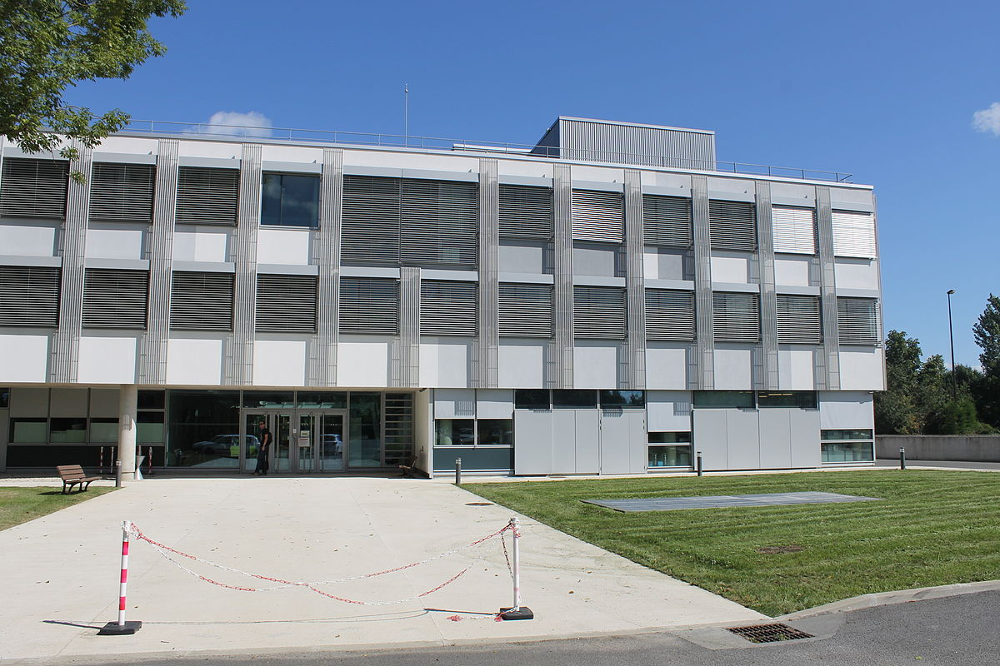
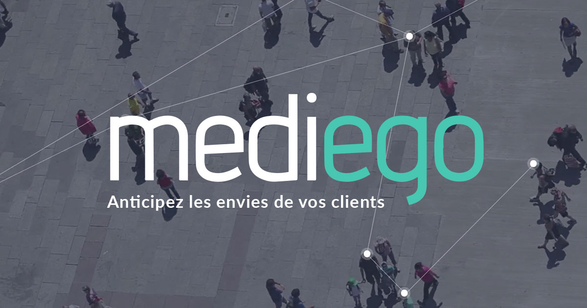

<--Retour à la page principale
Anne-Marie Kermarrec est née à Rennes. Cependant sa famille vient plutôt du Finistère et des Côtes d'Armor. Elle a grandi à Rennes jusqu'à ce qu'elle ait dix ans. Elle a ensuite passé huit ans dans les côtes d'Armor, à Saint-Brieuc. Quand elle était petite, elle n'avait aucun rêve ou projet professionnel :elle voulait simplement faire un métier qui l’intéresse et la passionne. Son métieractuel lui correspond parfaitement et répond à ces deux critères. Lorsqu'elle était petite, elle était dynamique et curieuse, elle voulait toujours faire des activités diverses et variées, comme la musique, avec moyennement de succès , du dessin, puis du sport : notamment beaucoup d’athlétisme jusqu'à l'âge de quatorze/quinze ans, où elle se mit à jouer du Basket qui ne lui plut pas du tout. Elle s'est ensuite mise à faire du Volley-ball, qu'elle pratique toujours aujourd'hui, lors de ses temps libres. Les études lui plaisaient globalement, de plus, elle était la quatrième et dernière de la fratrie,et avait donc ses frères et sœurs pour l'aider. Elle était plutôt bonne élève et a fait un Bac C. Après cet examen, elle a hésité à faire médecine ou scientifique et mathématiques. Au début, elle ne se voyait pas faire de l'informatique, étant donné le peu d'évolution dans ce domaine en 1990. Elle choisit l'informatique, grâce à l'orientation de son frère. Elle a dû partir à Amsterdam dans un laboratoire de recherches informatiques, mais ne parlait pas le néerlandais. Là-bas, elle s'est trouvé une équipe de sport et des grandes amies. Elle a ensuite travaillé en Angleterre, à Cambridge, pour un laboratoire de recherches Microsoft. Elle travaillait alors sur le système peer-to-peer, un système distribué. Un système distribué est un ensemble de machines qui collaborent pour effectuer une opération ensemble. Dans ce système, il n'y a aucun serveur central, donc aucune entité possédant toute les informations. Grâce à ce système, plus il y a de clients, plus il y a de serveurs, donc plus la machine est puissante, de plus, les données sont protégées. Anne-Marie Kermarrec est, après, revenue, en 2004, en Bretagne en tant que directrice de recherche à l'Inria (L'Institut national de recherche en informatique et en automatique) de Rennes. Elle y a monté une équipe sur les systèmes peer-to-peer, ou pair à pair en Français. Cette transition, de l'Angleterre à sa ville natale, a été productif d'un point de vue professionnel : ses collègues de travail lui ont donné envie de pousser ses recherches. Ces années en Angleterre ont changé son point de vue, devenu, alors, pragmatique. De plus, elles lui ont permis de se spécialiser dans un domaine très peu abordé en France : les algorithmes personnalisés. Toutes ces expériences professionnelles ainsi qu'une aide financière de l'Inria en 2008, lui ont permis, à quarante cinq ans, de créer son entreprise. Puis, petit à petit, elle s'est rendu compte que l'on commençait à voir des algorithmes qui permettaient de personnaliser et d'adapter un contenu de certains services Internet qui commençaient à être utilisés par de nombreuses entreprises. Aujourd'hui, ces systèmes sont adoptés par les services de streaming, comme Netflix ou OCS, ou par des géants du commerce en ligne, comme Amazon, par exemple. Ces algorithmes ont été une opportunité rare et prometteuse pour les chercheurs informatiques, et donc pour Anne-Marie Kermarrec. C'est donc sur ces algorithmes et cette carrière qu'elle créa son entreprise, nommée Mediego.